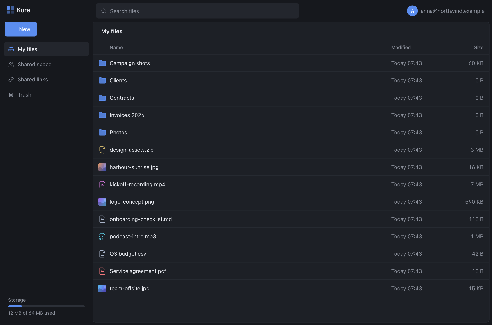
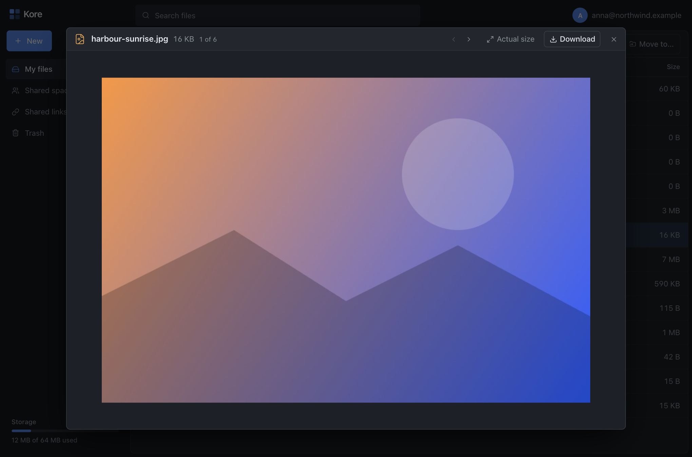
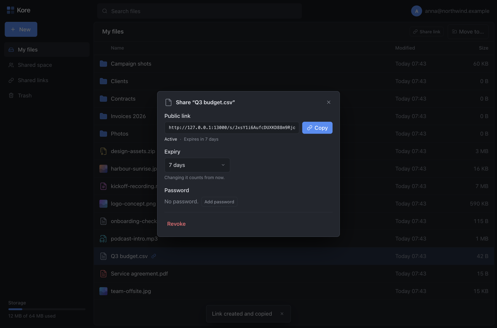
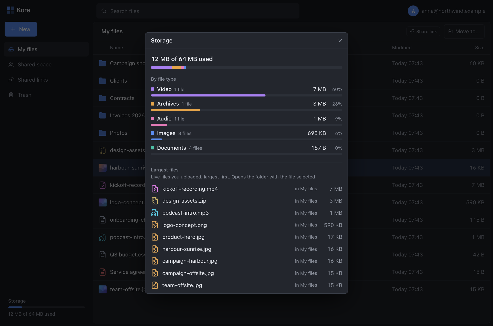
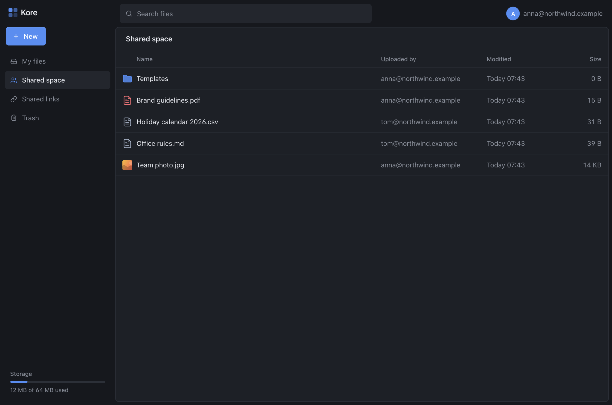
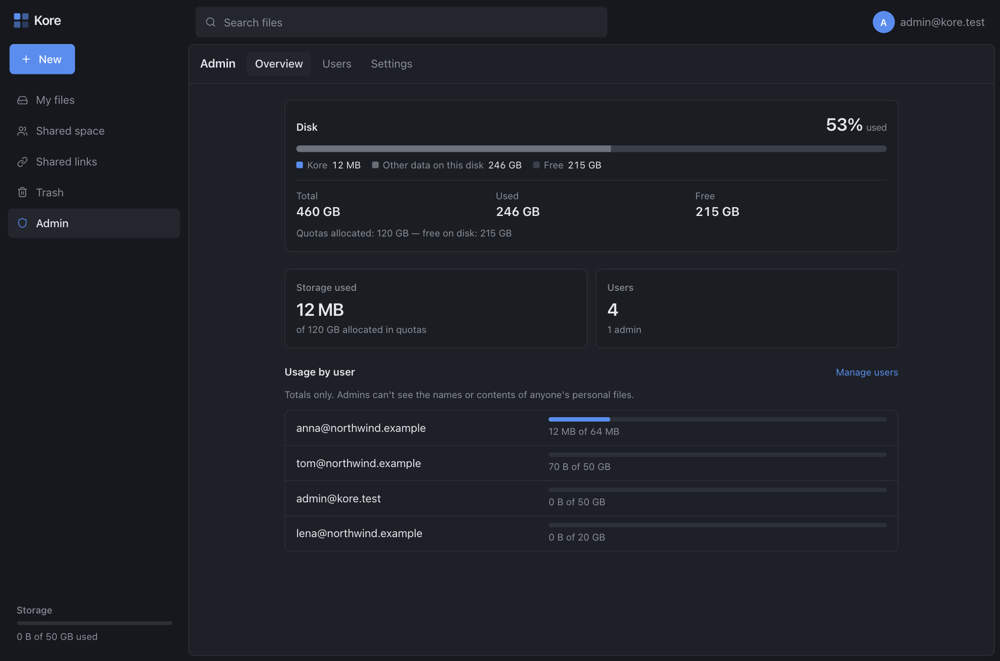
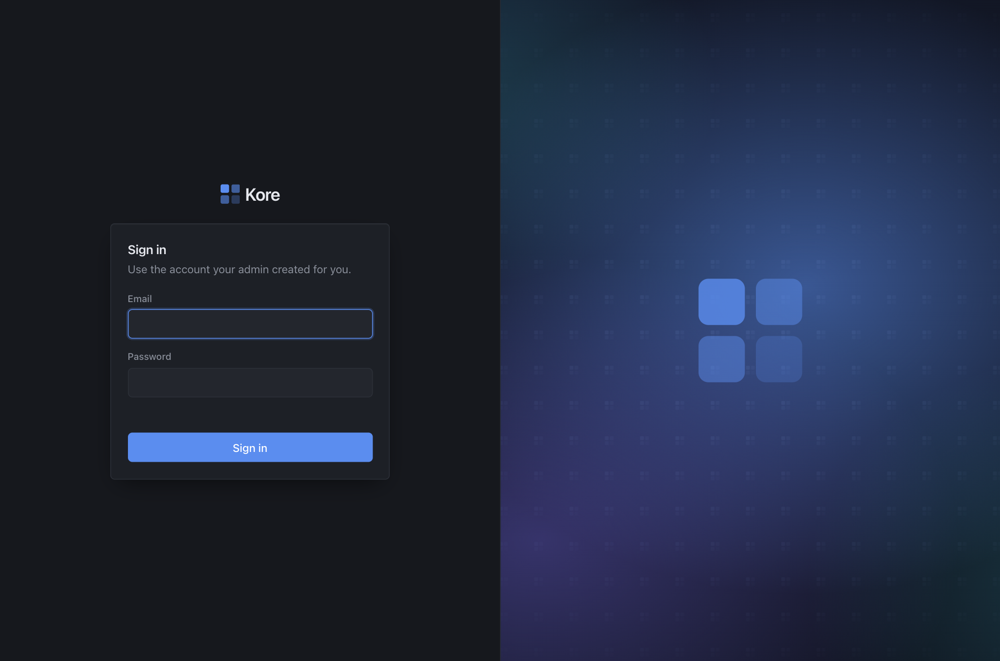

Your office files,
on your own server.
Kore is a small, fast, Google Drive-style file server for a team. No suite of apps, no subscription: just files, folders, sharing and quotas.
Open source, MIT licensed. Go API, Next.js UI, SQLite. Runs fine on a small box.

Everything a small office needs. Nothing it doesn't.
Built because the big suites were slow and complicated, and the tiny ones looked rough. Kore does file storage and sharing, and does it well.
Personal and shared spaces
Every person gets a private space. Everyone also gets one shared space. The admin can't browse anyone's private files.
Big uploads that just work
Drag in files or whole folders. Uploads are chunked and resumable, so they survive reloads, flaky Wi-Fi and Cloudflare Tunnel's 100 MB limit.
Public share links
Send a file or a whole folder to someone without an account. Optional password and expiry, browsable folders, zip download.
Previews and thumbnails
Look at text, Markdown, images and PDFs without downloading. Image files show a little picture of themselves right in the list.
Quotas and a storage meter
Set a limit per person. Click the meter to see what takes the space, by file type, with the largest files listed.
Trash, search, move
Deleted files wait in the trash until retention runs out. Search by name, drag to move, and shuffle files between your space and the shared one.
A look around
Dark, dense and quick, with a layout you already know. Click a screenshot for the full size.












Screenshots use made-up people and files.
Install in a few minutes
Docker and Docker Compose on a Linux machine are all you need. One small config file, one .env.
# get it git clone https://github.com/qarasky/kore.git cd kore cp kore.docker.example.toml kore.toml cp .env.example .env # edit kore.toml (admin email + password) # and .env (data folder, user id) # set up the data volume, then start docker compose run --rm api kore init \ -config /etc/kore/kore.toml docker compose up -d
- Set the admin account in
kore.toml. That account creates everyone else. - Point
KORE_DATA_DIRat the disk that should hold the files, such as a RAID mount. - Open it at
http://127.0.0.1:8080, put it behind a Cloudflare Tunnel, or bind it to your LAN or Tailscale address.
The full guide covers backups, LAN and Tailscale access, Cloudflare Tunnel and troubleshooting: README on GitHub.
Careful with your files
It runs on a real office server, so data safety comes before cleverness.
- Your data stays yours. Plain files plus one SQLite database on a volume you choose.
- Loud failures. If the storage volume isn't mounted, Kore refuses to start instead of writing to an empty folder.
- Private means private. Other people's personal files don't even show up as existing, admins included.
- Safe file handling. Uploads never run in the app's origin, and SVG is never previewed.
- Nothing phones home. No external fonts, scripts or analytics: everything is bundled.
- Rate-limited sign-in. Login attempts, password hashing and link-password guesses are all bounded.